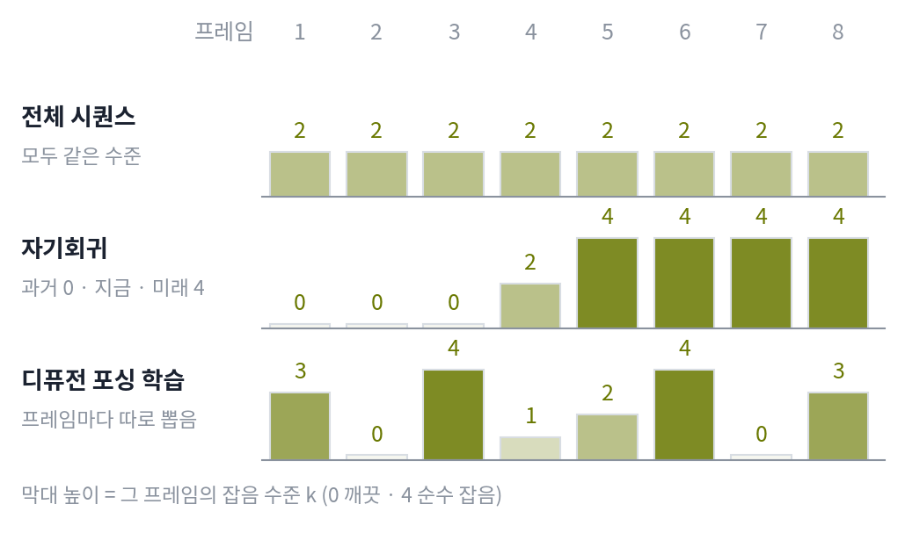

디퓨전 포싱: 프레임마다 잡음 수준을 따로 준다
모델이 만든 과거는 비싸다. 그런데 노출 편향을 줄이려고 꼭 모델이 만든 과거가 필요할까? 모델에게 필요한 것은 「과거가 조금 틀렸을 수도 있다」는 것을 알고 그 위에서 다음 프레임을 만드는 힘이다. 두 목표를 합치는 방법도 다시 보자. 전체 시퀀스와 자기회귀를 잡음 수준으로 그려 보면, 전체 시퀀스 디퓨전은 모든 프레임에 같은 잡음 수준을 준다. 자기회귀는 과거 프레임을 수준 0(깨끗)으로, 지금 만드는 프레임을 중간 수준으로, 미래 프레임을 가장 큰 수준(아직 아무 정보도 없음)으로 둔다. 차이는 프레임마다 잡음 수준이 같은가 다른가뿐이다. 그렇다면 프레임마다 수준을 아무렇게나 줄 수 있는 모델 하나를 학습하면, 둘 다 그 모델의 특수한 경우로 들어오지 않을까?
아래 그림은 어느 한 순간 프레임 여덟 장이 가진 잡음 수준을 막대로 세운 것이다. 맨 아래 줄이 이 절의 방법이 학습 때 보는 모양이다.

역사: 다음 토큰 맞히기와 전체 시퀀스 디퓨전의 만남
2024년 7월 MIT 의 천(Boyuan Chen)과 동료들은 「Diffusion Forcing: Next-token Prediction Meets Full-Sequence Diffusion」(NeurIPS 2024)에서 이 생각을 학습법으로 만들었다. 공저자에는 로봇 제어를 연구하는 테드레이크(Russ Tedrake)와 3차원 비전을 연구하는 지츠만(Vincent Sitzmann)이 있다. 영상 생성만이 아니라 로봇의 계획까지 한 모델로 다루려는 작업이었다. 이들은 이 학습법이 모든 부분 시퀀스의 로그우도(모델이 그 데이터에 주는 로그 확률)의 아래쪽 바닥, 곧 ELBO 를 최적화한다는 것을 보였다. 2025년 2월 송기환(Kiwhan Song)과 동료들은 이 방식을 트랜스포머로 옮긴 디퓨전 포싱 트랜스포머(DFoT, ICML 2025)에서, 과거 프레임을 몇 장이든 조건으로 받고 과거를 얼마나 따를지를 가이던스처럼 조절하는 과거 프레임 가이던스(history guidance)를 더했다.
손실: 프레임마다 자기 잡음 수준을 갖는다
프레임마다 잡음 수준 kn을 따로 뽑는다. 신경망은 저마다 다른 수준의 잡음이 섞인 프레임들을 받아, 앞 프레임들을 조건으로 각 프레임에 섞인 잡음을 맞힌다.
특수한 경우 둘을 되찾아 보자. 모든 kn이 같으면 전체 시퀀스 디퓨전이다(다만 앞만 본다). 과거는 k = 0, 지금 프레임은 아무 수준, 미래는 Kmax이면 한 프레임씩 만드는 자기회귀다. 학습 때 무작위 조합을 두루 보았으므로, 생성할 때는 어떤 모양의 일정으로 돌려도 신경망에게는 본 적 있는 입력이다. 이렇게 프레임마다 잡음 수준을 따로 뽑아 학습하는 방법을 디퓨전 포싱 (프레임마다 따로 잡음 섞기 / diffusion forcing)이라 한다.
이 자유를 쓰는 대표적인 일정이 피라미드다. 뒤 프레임일수록 조금씩 늦게 출발시켜서, 신경망을 한 번 부를 때 여러 프레임을 서로 다른 수준에서 함께 걷어 낸다. 앞 프레임은 거의 깨끗하고 뒤 프레임은 아직 흐릿하다. 과거가 완전히 깨끗해질 때까지 기다리지 않으니 한 장씩보다 빠르고, 앞부분부터 내보낼 수 있으니 전체 시퀀스보다 스트리밍에 맞다. 게다가 조금 잡음 섞인 과거를 조건으로 삼도록 배웠기 때문에, 과거의 작은 오류를 「어차피 흐릿한 정보」로 다룰 수 있다. 노출 편향을 고치려고 모델의 과거를 비싸게 만들어 넣는 대신, 데이터의 과거를 흐려 「틀렸을 수도 있는 과거」를 값싸게 흉내 낸 셈이다.
ML에서: 조합이 너무 많다
프레임마다 수준을 따로 뽑으면 조합이 폭발한다. SkyReels-V2(2025년 4월)는 이 조합 공간을 줄이려고 뒤 프레임의 잡음 수준이 앞 프레임보다 작아지지 않는다(비감소)는 제약을 걸었다. 앞선 AR-Diffusion 의 제약을 가져온 것으로, 논문은 조합 공간의 크기가 약 10⁴⁸에서 10³²로 줄었다고 적었다. 위젯의 피라미드가 바로 이 모양이다. 어차피 생성할 때는 과거가 미래보다 깨끗하므로, 쓰지 않을 조합까지 학습할 필요는 없다는 판단이다. MAGI-1 의 덩어리마다 단조롭게 늘어나는 잡음도 같은 모양이다.
문제 9. 빵 네 판, 오븐 하나
빵 네 판을 굽는다. 판마다 오븐에서 4단계를 거쳐야 하고, 오븐을 한 번 돌리면 안에 든 판들이 저마다 한 단계씩 나아간다. 오븐에는 판이 몇 개든 들어간다고 하자. (가) 한 판을 끝까지 구운 뒤 다음 판을 넣으면 오븐을 모두 몇 번 돌리는가? 첫 빵은 몇 번째에 나오는가? (나) 네 판을 처음에 한꺼번에 넣으면? (다) 오븐을 한 번 돌릴 때마다 새 판을 하나씩 넣으면(첫 판이 1단계를 마친 뒤에 둘째 판을 넣는 식)?

(가)는 판마다 4번씩 네 판이니까 16번, 첫 빵은 4번째요. (나)는 네 판이 함께 나아가니까 4번이고요. (다)는… 판마다 여전히 4단계씩이니까 16번이요.

민준 학생, (다)에서 오븐을 세 번째 돌릴 때 안에 든 판은 몇 개죠?

셋이요. 한 번 돌릴 때 세 판이 같이 나아가네요. 단계 수가 아니라 오븐을 돌리는 횟수를 세야죠. 첫 판이 4번째에 나오고, 그 뒤로 한 번에 하나씩 나오니까 4 + 3 = 7번이에요.

그러면 (나)가 4번으로 제일 빠른데, 왜 굳이 (다)를 해?
(나)는 넣을 판을 언제 다 정해야 하죠?

처음에요. 오븐을 돌리는 동안 손님이 다른 빵을 주문해도 반영할 수가 없어요. (다)는 첫 빵이 (나)와 똑같이 4번째에 나오면서, 뒤 판은 그때그때 정해서 넣을 수 있고요.

그런데 빵은 옆 판을 보지 않잖아요. 영상은 뒤 프레임이 앞 프레임을 보고 만들어지니까, (다)처럼 하려면 덜 걷힌 앞 프레임을 보고 다음 프레임을 걷어 내야 해요. 모델이 그런 입력을 배운 적이 있어야겠네요.

그래요. 디퓨전 포싱이 프레임마다 수준을 따로 뽑아 학습하는 까닭 하나가 그거예요.
조별 보고서를 한 사람이 다 끝낸 뒤 다음 사람에게 넘기는 것보다, 앞사람이 초안을 쓰는 동안 뒷사람이 그 초안을 보며 시작하면 빨리 끝나는 거랑 같네요.
문제 10. 특수한 경우와 조합의 수
프레임 8개, 잡음 수준 k ∈ {0, 1, 2, 3, 4}인 디퓨전 포싱을 생각하자. (가) 프레임 2개를 한 덩어리로 묶어 덩어리 단위로 만드는 자기회귀에서, 3번째 덩어리(5·6번째 프레임)를 걷어 내는 한 걸음은 (k1, …, k8)이 어떤 모양인가? (나) 프레임마다 수준을 따로 고르게 뽑을 때, 한 학습 표본이 우연히 전체 시퀀스 디퓨전의 모양(모든 수준이 같음)이 될 확률은? (다) 비감소 제약을 걸면 가능한 모양은 몇 가지로 줄어드는가?
(가)는 앞의 두 덩어리는 깨끗하니까 0 네 개, 그다음 5·6번째는 함께 걷어 내는 중이니까 1에서 4 사이의 같은 수준, 뒤는 전부 4요. 예를 들면 (0, 0, 0, 0, 2, 2, 4, 4).
맞아요. (나)는요?
모두 같은 경우는 5가지, 전체는 5⁸ = 390,625가지라 5/390,625, 7만 8천 번에 한 번꼴이에요.
그러면 이상한데. 전체 시퀀스 모양은 학습 때 거의 안 나오잖아. 그걸 특수한 경우로 「되찾는다」고 할 수 있어?
서연 학생, 신경망은 여덟 칸의 모양 전체를 외우나요, 아니면 한 칸씩 「내 수준은 이것, 앞 프레임들의 수준은 저것」을 보고 푸나요?
한 칸씩이요. 3번째 프레임 입장에서는 앞 두 칸의 수준과 자기 수준만 중요하고요. 모두 같은 모양이 드물어도, 「앞 프레임들이 나와 같은 수준」인 칸은 훨씬 자주 나와요.

앞 두 칸이 자기와 같을 확률은 1/25예요. 모양 전체로 세면 드물어 보이지만 칸 하나로 세면 흔하네요.
그래요. 다만 서연 학생의 걱정이 틀린 건 아니에요. 쓰지 않을 조합에 학습을 나눠 주는 건 낭비라서 (다)의 제약이 나왔어요.
(다)는 뒤로 갈수록 작아지지 않는 수열의 개수를 세는 거니까, 중복조합 C(8 + 4, 4) = 495가지요. 코드로 세어 봐도 495예요. 약 790분의 1로 줄어요.
부분수열 개수를 셀 때 순서를 고정하면 조합 문제로 바뀌는 거랑 같네요.